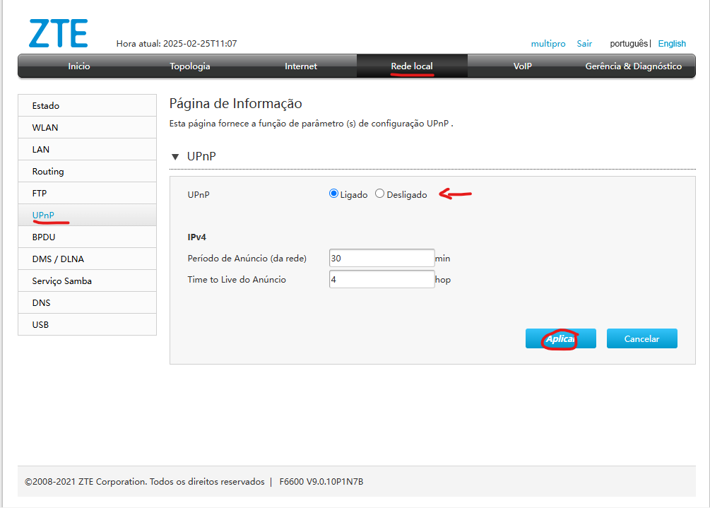
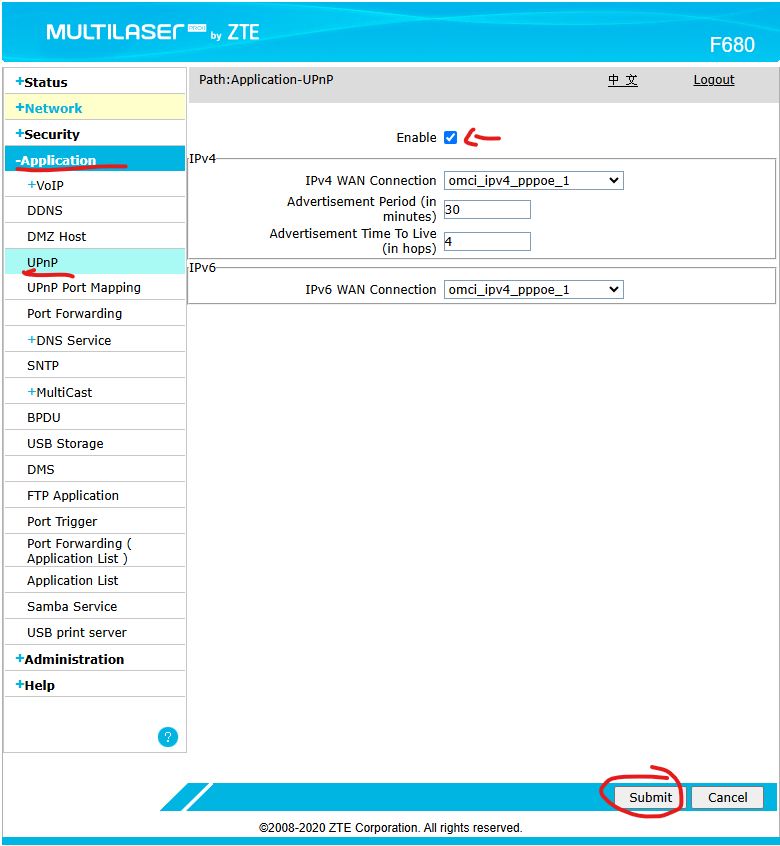

Configuração UPNP - CAT | TrixNet
Oque é UPNP ?
UPnP (Universal Plug and Play) é um conjunto de protocolos que permite que dispositivos em uma rede detectem e se comuniquem automaticamente entre si. Ele facilita a configuração de conexões entre computadores, roteadores, consoles de jogos, smart TVs e outros dispositivos sem a necessidade de intervenção manual.
Passo a passo de como configurar UPNP F6600 (Interface cinza)
Para acessar o UPNP na ONU cinza, segue abaixo:
Passo a passo de como configurar UPNP F680 (Interface azul)
Para acessar o UPNP na ONU azul, segue abaixo:
⚠️ Importante
Basta ativar o UPNP conforme as imagens acima que já ira entrar em vigor o protocolo.